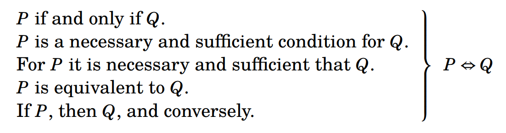

2.4 Biconditional Statements¶
It is important to understand that \(P \Rightarrow Q\) is not the same as \(Q \Rightarrow P\). To see why, suppose that \(a\) is some integer and consider the statements
(\(a\) is a multiple of 6) \(\Rightarrow\) (\(a\) is divisible by 2),
(\(a\) is divisible by 2) \(\Rightarrow\) (\(a\) is a multiple of 6).
The first statement asserts that if \(a\) is a multiple of 6 then \(a\) is divisible by 2. This is clearly true, for any multiple of 6 is even and therefore divisible by 2. The second statement asserts that if \(a\) is divisible by 2 then it is a multiple of 6. This is not necessarily true, for \(a = 4\) (for instance) is divisible by 2, yet not a multiple of 6. Therefore the meanings of \(P \Rightarrow Q\) and \(Q \Rightarrow P\) are in general quite different. The conditional statement \(Q \Rightarrow P\) is called the converse of \(P \Rightarrow Q\), so a conditional statement and its converse express entirely different things.
But sometimes, if \(P\) and \(Q\) are just the right statements, it can happen that \(P \Rightarrow Q\) and \(Q \Rightarrow P\) are both necessarily true. For example, consider the statements
(\(a\) is even) \(\Rightarrow\) (\(a\) is divisible by 2),
(\(a\) is divisible by 2) \(\Rightarrow\) (\(a\) is even).
No matter what value \(a\) has, both of these statements are true. Since both \(P \Rightarrow Q\) and \(Q \Rightarrow P\) are true, it follows that \(( P \Rightarrow Q ) \land ( Q \Rightarrow P )\) is true.
Let’s introduce a new symbol \(\Leftrightarrow\) to express the meaning of the statement \(( P \Rightarrow Q ) \land ( Q \Rightarrow P )\). The expression \(P \Leftrightarrow Q\) is understood to have exactly the same meaning as \(( P \Rightarrow Q ) \land ( Q \Rightarrow P )\). According to the previous section, \(Q \Rightarrow P\) is read as “\(P\) if \(Q\),” and \(P \Rightarrow Q\) can be read as “\(P\) only if \(Q\). Therefore we pronounce \(P \Leftrightarrow Q\) as “\(P\) if and only if \(Q\).” For example, given an integer \(a\) we have the true statement
(\(a\) is even) \(\Leftrightarrow\) (\(a\) is divisible by 2), which we can read as “The integer \(a\) is even if and only if \(a\) is divisible by 2.”
The truth table for \(\Leftrightarrow\) is shown below. Notice that in the first and last rows, both \(P \Rightarrow Q\) and \(Q \Rightarrow P\) are true (according to the truth table for \(\Rightarrow\)), so \(( P \Rightarrow Q ) \land ( Q \Rightarrow P )\) is true, and hence \(P \Leftrightarrow Q\) is true. However, in the middle two rows one of \(P \Rightarrow Q\) or \(Q \Rightarrow P\) is false, so \(( P \Rightarrow Q ) \land ( Q \Rightarrow P )\) is false, making \(P \Leftrightarrow Q\) false.
| P | Q | P ⇒ Q | Q ⇒ P | P ⇔ Q |
|---|---|---|---|---|
| T | T | T | T | T |
| T | F | F | T | F |
| F | T | T | F | F |
| F | F | T | T | T |
Compare the statement \(R\): (\(a\) is even) \(\Leftrightarrow\) (\(a\) is divisible by 2) with this truth table. If \(a\) is even then the two statements on either side of \(\Leftrightarrow\) are true, so according to the table \(R\) is true. If \(a\) is odd then the two statements on either side of \(\Leftrightarrow\) are false, and again according to the table \(R\) is true. Thus \(R\) is true no matter what value \(a\) has. In general, \(P \Leftrightarrow Q\) being true means \(P\) and \(Q\) are both true or both false.
Not surprisingly, there are many ways of saying \(P \Leftrightarrow Q\) in English. The following constructions all mean \(P \Leftrightarrow Q\):
\(P\) if and only if \(Q\).
\(P\) is a necessary and sufficient condition for \(Q\).
For \(P\) it is necessary and sufficient that \(Q\).
\(P\) is equivalent to \(Q\).
If \(P\), then \(Q\), and conversely.
{kind=link}

The first three of these just combine constructions from the previous section to express that \(P \Rightarrow Q\) and \(Q \Rightarrow P\). In the last one, the words “…and conversely” mean that in addition to “If \(P\), then \(Q\)” being true, the converse statement “If \(Q\), then \(P\)” is also true.
Exercises for Section 2.4¶
Without changing their meanings, convert each of the following sentences into a sentence having the form “\(P\) if and only if \(Q\).”
For matrix \(A\) to be invertible, it is necessary and sufficient that \(\text{det}(A) \neq 0\).
Answer
\(P\) : Matrix \(A\) is invertible. \(Q\) : \(\text{det}(A) \neq 0\). Invertible \(\Leftrightarrow\) \(\text{det}(A) \neq 0\). Matrix \(A\) is invertible if and only if \(\text{det}(A) \neq 0\).
If a function has a constant derivative then it is linear, and conversely.
Answer
\(P\) : A function has a constant derivative. \(Q\) : A function is linear. Constant derivative \(\Leftrightarrow\) linear. A function has a constant derivative if and only if it is linear.
If \(x y = 0\) then \(x = 0\) or \(y = 0\), and conversely.
Answer
\(P\) : \(xy = 0\). \(Q\) : \(x = 0\) or \(y = 0\). \(xy = 0\) \(\Leftrightarrow\) \(x = 0\) or \(y = 0\). \(xy = 0\) if and only if \(x = 0\) or \(y = 0\).
If \(a \in \mathbb { Q }\) then \(5 a \in \mathbb { Q }\), and if \(5 a \in \mathbb { Q }\) then \(a \in \mathbb { Q }\).
Answer
\(P\) : \(a \in \mathbb{Q}\). \(Q\) : \(5a \in \mathbb{Q}\). \(a \in \mathbb{Q}\) \(\Leftrightarrow\) \(5a \in \mathbb{Q}\). \(a \in \mathbb{Q}\) if and only if \(5a \in \mathbb{Q}\).
For an occurrence to become an adventure, it is necessary and sufficient for one to recount it. (Jean-Paul Sartre)
Answer
\(P\) : The occurrence becomes an adventure. \(Q\) : One recounts the occurrence. Occurrence becomes adventure \(\Leftrightarrow\) one recounts the occurrence. An occurrence becomes an adventure if and only if one recounts the occurrence.